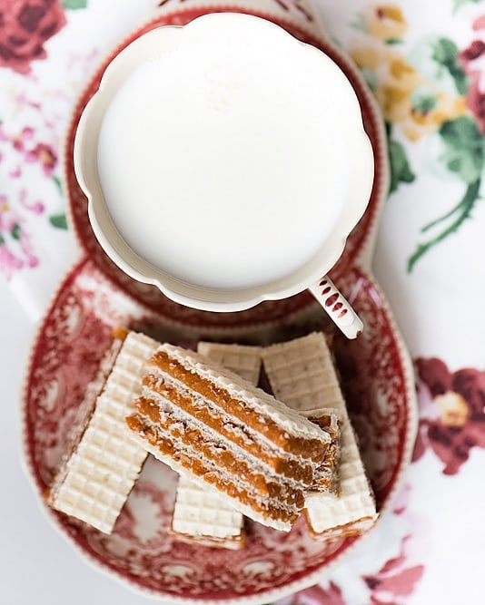

Grilážové rezy podľa @magicke.pecenie — Normy Jedál
#dnesjem od samého rána grilážku 😂. Aj keď je to známy dezert, zároveň je to to najvhodnejšie pre "sladkých" začiatočníkov. Takže link na postup je v bio - u nás na blogu😊. Polly. #grilazky #grilazoverezy #grilazka #recept #karamel #salco #klasikajeklasika #milkandsweets